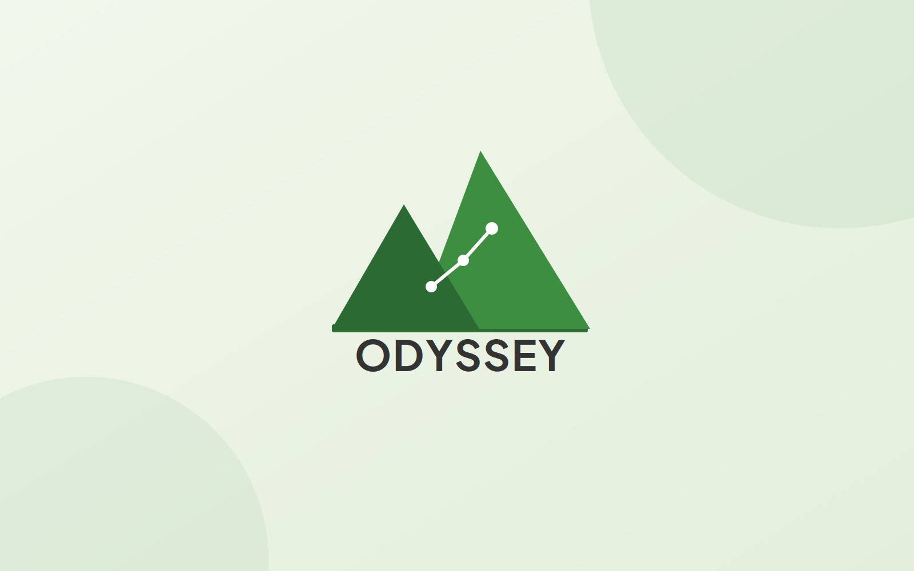

One place for students to find outdoor trips and for organizers to run them — discovery and logistics, finally on the same platform.

The brief
Outdoor trips on campus lived in scattered places — group chats, flyers, sign-up sheets, word of mouth. Students couldn't easily find what was happening, and the people organizing trips had no single place to manage rosters, details, and logistics.
Odyssey brings both sides together: a discovery experience for students browsing and signing up for trips, and a management surface where organizers keep every trip's details in one place. I worked across a six-person capstone team and owned the parts where design meets the client.
What I owned
As the bridge between the client and the build, I ran client communication and turned what I heard into the product's look and feel — then helped build it. That meant defining the brand and visual identity, designing the core flows in Figma, and contributing frontend so the design held up in code, not just in the mockups.
Add your specifics here: a moment a client conversation changed a decision, a constraint you designed around, or the flow you're proudest of. Name the actual screen or interaction.
Process
Led communication with the client to understand who Odyssey was for and what success looked like. Translated those conversations into a shared set of requirements the whole team could design and build against.
Designed the logo and visual theming — the palette, type, and tone that make Odyssey feel built for the outdoors rather than like a generic sign-up form.
Mapped the student path (browse → trip detail → sign up) and the organizer path (create → manage details → track roster) as low-fidelity wireframes, getting structure right before any polish.
Brought the wireframes up to high fidelity — trip cards, detail pages, and the management view — applying the brand system consistently across the product.
Contributed to the frontend so the designed screens shipped as real, working pages — closing the gap between the Figma file and what users actually touch.
Selected screens
Reflection